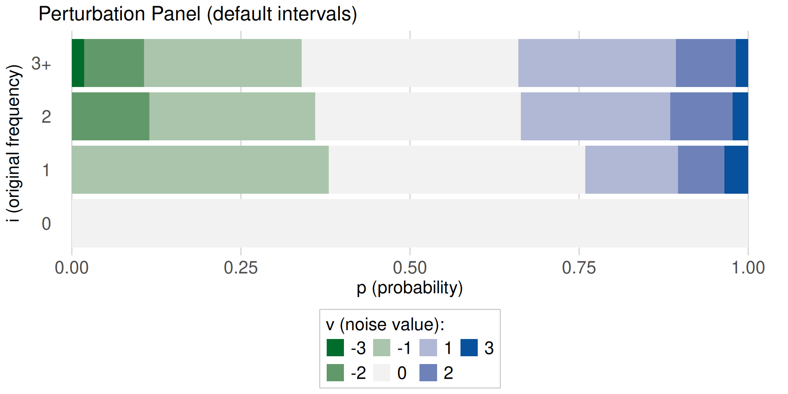
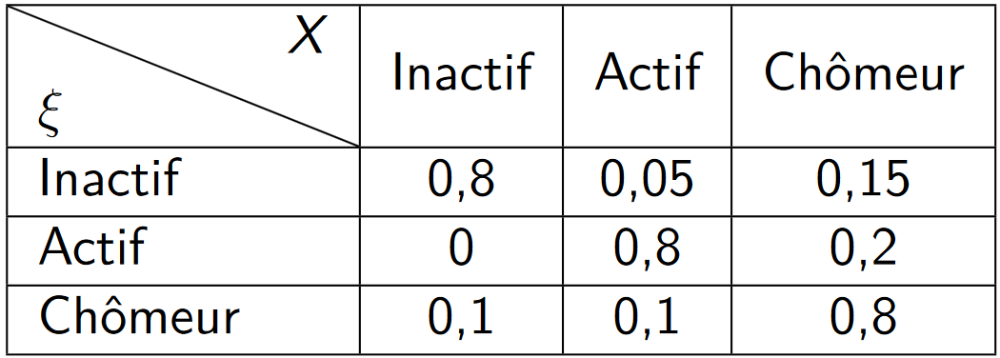

Les méthodes perturbatrices
Pour données tabulées ou individuelles
Introduction
Objectifs
- Quelles sont les méthodes perturbatrices qui permettent de limiter les risques de divulgation ?
- Quelles méthodes s’appliquent aux données tabulées, lesquelles aux données individuelles ?
- De quel type de risque les méthodes nous protègent-elles?
- Quels sont les conséquences sur la perte d’information ?
Les méthodes principales à disposition
| Méthodes | ||
|---|---|---|
| Traitements | Non-Perturbatrices | Perturbatrices |
|
Avant tabulation (sur micro-données) |
Ré-échantillonnage | Injection de bruit |
| Recodage des variables | Micro-agrégation | |
| Suppression locale | Swapping (rang ou ciblé) | |
|
Après tabulation (sur données agrégées) |
Recodage des variables | Arrondis |
| Suppression de cases | Clés aléatoires | |
| Algo de confidentialité différentielle | ||
Il existe aussi une autre technique consistant à produire des données synthétiques.
1 Données tabulées
Perturbatif vs suppressif
Dans quels cas, les méthodes perturbatrices sont préférables aux méthodes suppressives?
- Permettent la prise en charge de diffusions complexes à prendre en charge avec des méthodes suppressives:
- nombreux tableaux (diffusion industrielle),
- diffusion en plusieurs moments
- différenciation géographique ou de nomenclature
- Contrôler la perte d’utilité:
- un arbitrage possible en général en jouant sur les paramètres du bruit
- pas de suppression => une information disponible et manipulable
Perturbatif vs suppressif
Leurs limites:
- Perte parfois de caractéristiques basiques (additivité dans les tableaux)
- Une perception du traitement du secret moins immédiate qu’avec le blanchiment
- Une pédagogie nécessaire vis-à-vis du public pour l’utilisation des données
- Des règles historiques de secret à revisiter car adaptées pour des méthodes suppressives
Méthodes perturbatrices
Étendue de la perturbation:
Seulement sur les plus petits comptages (données les plus à risque de divulgation)
Sur toutes les cellules: toutes les cellules du tableau sont perturbées (arrondi, Méthode des clés aléatoires (CKM))
Problématiques des méthodes perturbatrices:
Comment assurer la cohérence des tableaux entre eux ?
Comment préserver l’additivité au sein des tableaux ?
2 Méthodes d’arrondi et apparentées
Méthodes d’arrondi et apparentées
- Arrondis déterministes
- Arrondis aléatoires
- Small Count Rounding
- Controlled Rounding
Des méthodes principalement adaptées aux tableaux de comptages.
Pour plus d’informations: https://sdctools.github.io/HandbookSDC/05-frequency-tables.html#sec-Rounding_freq (Hundepool et al. 2024)
Arrondis déterministes ou aléatoires
- Arrondi de tous les comptages
- Un paramètre: la base d’arrondi \(b\)
- Arrondi déterministe
- Un comptage est toujours arrondi de la même manière
- Arrondi aléatoire:
- un comptage est arrondi aléatoirement à l’inférieur ou au supérieur
- Une méthode non biaisée par nature
- Une meilleure protection que l’arrondi déterministe
Exemple avec une base \(10\)
- Arrondi déterministe: \(X=23\) => \(X^\prime = 20\).
- Arrondi aléatoire: \(X=23\) => \(X^\prime = 20\) (probabilité de \(0.7\)) ou \(X^\prime = 30\) (probabilité de \(0.3\)).
Arrondis des petits comptages
- Algorithme Small Count Rounding
- Les comptages sensibles (en général les petits comptages) sont systématiquement arrondis
- Quelques comptages supplémentaires sont arrondis pour conserver l’additivité dans les tableaux
- Avantages:
- Ne perturbe qu’une partie du tableau
- Minimise les perturbations globales
- Assure la conservation de l’additivité
- Limite principale:
- Ne permet pas d’assurer une protection systématique des cas de différenciation
- Implémenté dans le package
RGaussSuppression
Arrondi contrôlé
- Controlled Rounding
- Toutes les cases d’un tableau sont arrondies en respectant une base \(b\)
- Un algorithme assure en même temps:
- la conservation de l’additivité dans le tableau
- la minimisation de la somme des différences absolues entre valeurs originales et arrondies
- Implémenté dans le logiciel
Tau-ARGUS- avec prise en compte des hiérarchies
Un exemple
Supposons le tableau de comptage suivant (en gras les informations jugées sensibles)
| Nord | Ouest | Sud | Est | Total | |
|---|---|---|---|---|---|
| Polluante | 6 | 14 | 1 | 7 | 28 |
| Non-Polluante | 3 | 2 | 1 | 13 | 19 |
| Total | 9 | 16 | 2 | 20 | 47 |
Small Count Rounding
| Nord | Ouest | Sud | Est | Total | |
|---|---|---|---|---|---|
| Polluante | 6 | 14 | 0 | 7 | 28 |
| Non-Polluante | 5 | 0 | 0 | 13 | 18 |
| Total | 11 | 14 | 0 | 20 | 45 |
Arrondi contrôlé
| Nord | Ouest | Sud | Est | Total | |
|---|---|---|---|---|---|
| Polluante | 5 | 15 | 0 | 5 | 25 |
| Non-Polluante | 5 | 2 | 0 | 15 | 20 |
| Total | 10 | 15 | 0 | 20 | 45 |
3 La méthode des clés aléatoires (CKM)
Principales caractéristiques de la méthode:
Toutes les cellules sont perturbées
Les cellules sont perturbées indépendamment les unes des autres
Une même cellule est toujours perturbée de la même manière
Les zéros originaux ne sont pas perturbés (mais un effectif faible peut devenir un zéro)
La distribution de probabilités
Propriétés :
Une déviation maximale D et une variance V sont fixés en amont
Le bruit injecté est sans biais
La loi de probabilité de la déviation injectée est définie à partir d’une matrice de transition
Un exemple
| Nord | Ouest | Sud | Est | Total | |
|---|---|---|---|---|---|
| Polluante | 4 | 15 | 0 | 8 | 28 |
| Non-Polluante | 1 | 3 | 2 | 15 | 20 |
| Total | 10 | 16 | 4 | 21 | 46 |
Les usages
La méthode est utilisée par plusieurs INS:
Depuis 2006, ABS met à disposition un outil de requêtage en ligne pour obtenir des données de son recensement quinquennal. Les données sont protégées avec la CKM. (https://tablebuilder.abs.gov.au)
La CKM est une des méthodes préconisées par Eurostat pour protéger les données du Census européen 2021.
Dans ce cadre, Destatis utilise la CKM pour diffuser des données sur des grilles de 500m.
2024/2025: l’Insee diffuse les données sur les Quartiers de la Politique de la Ville (QPV).
Un exemple pour illustrer la CKM
Etape 1 : Construction de la matrice de transition
Probabilités de transition pour \(D = 3\) et \(V = 1.5\)
Un exemple pour illustrer la CKM
Etape 2 : Création d’une clé individuelle aléatoire
Supposons que la base \(\mathcal{B}\) soit composé des 6 individus suivant et qu’à chacun on associe une clé :
| id | Ville | Ecole | KEY |
|---|---|---|---|
| 1 | Rennes | Ensai | 0.9177275 |
| 2 | Paris | Mines | 0.1850062 |
| 3 | Rennes | Ensai | 0.6266963 |
| 4 | Lyon | Centrale | 0.1117820 |
| 5 | Marseille | Centrale | 0.6496634 |
| 6 | Lille | Centrale | 0.2813433 |
Un exemple pour illustrer la CKM
Etape 3 : Construction de la clé d’une cellule
Nous souhaitons diffuser le nombre d’individus selon leur école.
On a :
| Ecole | i | individus | Skey | CK |
|---|---|---|---|---|
| Ensai | 2 | {1,3} | 1.544424 | 0.544425 |
| Mines | 1 | {2} | 0.1805062 | 0.1805062 |
| Centrale | 3 | {4,5,6} | 1.0422789 | 0.42789 |
| Total | 6 | {1,2,3,4,5,6} | 2.772219 | 0.772219 |
Un exemple pour illustrer la CKM
Etape 4 : Déterminer la perturbation à injecter
| i | j | p | v | p_int_lb | p_int_ub |
|---|---|---|---|---|---|
| 0 | 0 | 1.00000000 | 0 | 0.00000000 | 1.00000000 |
| 1 | 0 | 0.37967089 | -1 | 0.00000000 | 0.37967089 |
| 1 | 1 | 0.37967089 | 0 | 0.37967089 | 0.75934178 |
| 1 | 2 | 0.13660124 | 1 | 0.75934178 | 0.89594302 |
| 1 | 3 | 0.06910130 | 2 | 0.89594302 | 0.96504432 |
| 1 | 4 | 0.03495568 | 3 | 0.96504432 | 1.00000000 |
| 2 | 0 | 0.11466600 | -2 | 0.00000000 | 0.11466600 |
| 2 | 1 | 0.24491770 | -1 | 0.11466600 | 0.35958370 |
| 2 | 2 | 0.30449462 | 0 | 0.35958370 | 0.66407832 |
| 2 | 3 | 0.22034995 | 1 | 0.66407832 | 0.88442827 |
| 2 | 4 | 0.09281544 | 2 | 0.88442827 | 0.97724371 |
| 2 | 5 | 0.02275629 | 3 | 0.97724371 | 1.00000000 |
| 3 | 0 | 0.01792237 | -3 | 0.00000000 | 0.01792237 |
| 3 | 1 | 0.08898737 | -2 | 0.01792237 | 0.10690974 |
| 3 | 2 | 0.23274919 | -1 | 0.10690974 | 0.33965893 |
| 3 | 3 | 0.32068214 | 0 | 0.33965893 | 0.66034107 |
| 3 | 4 | 0.23274919 | 1 | 0.66034107 | 0.89309026 |
| 3 | 5 | 0.08898737 | 2 | 0.89309026 | 0.98207763 |
| 3 | 6 | 0.01792237 | 3 | 0.98207763 | 1.00000000 |
Un exemple pour illustrer la CKM
Etape 5 : Conclusion
| Ecole | Valeur originale i | Valeur pertubée j | ||
|---|---|---|---|---|
| Ensai | 2 | 2 | ||
| Mines | 1 | 0 | ||
| Centrale | 3 | 3 | ||
| Total | 6 | 7 |
Avantages / inconvénients
| Avantages | Inconvénients |
|---|---|
| Facile d’implémentation | Perte d’additivité |
| Assure la cohérence des tableaux | Perception potentielle d’une non-protection de la part des utilisateurs |
| Réduit drastiquement le risque de différenciation géographique | |
| Compatible avec le requêtage / la diffusion sur mesure | |
| Utilité statistique des données très forte par rapport à des arrondis ou des suppressions |
4 La microagrégation*
Méthode perturbatrice, plus adaptée aux variables continues, mais peut-être adaptée aux variables catégorielles ordonnées
Idée principale :
Créer des petits groupes homogènes en prenant en compte les valeurs des variables sélectionnées
Remplacer les valeurs de tous les individus appartenant au groupe par une unique valeur (peut être la valeur moyenne de valeurs observées dans le groupe)
Un exemple
| Région | Age | Heures travaillées | Poids | |
| par semaine | de sondage | |||
| 92 | 36 | 17 | 1000 | |
| 75 | 41 | 35 | 2000 | |
| 75 | 52 | 0 | 1100 | |
| 94 | 45 | 35 | 2500 | |
| 75 | 41 | 0 | 1900 | |
| 92 | 26 | 46 | 1500 | |
| 92 | 31 | 38 | 800 | |
| 94 | 48 | 30 | 1200 |
- Il y a des croisements uniques pour la clef Age \(\times\) Région
Un exemple
| Région | Age | Heures travaillées | Poids |
| par semaine | de sondage | ||
| 92 | 17 | 1000 | |
| 75 | 35 | 2000 | |
| 75 | 0 | 1100 | |
| 94 | 35 | 2500 | |
| 75 | 0 | 1900 | |
| 92 | 46 | 1500 | |
| 92 | 38 | 800 | |
| 94 | 30 | 1200 |
- \(\mu_{red} = 45\), \(\mu_{yellow} = 31\), \(\mu_{green} = 47\)
Paramètres
Un grand nombre de sorties possibles pour cette méthode selon :
la définition d’homogénéité choisie
l’algorithme utilisé pour construire les groupes
la détermination de la valeur de remplacement
Les paramètres à définir :
Taille \(g\) de chaque groupe (plus la taille du groupe est grande, plus grande sera la perte d’information, et plus celle-ci est grande, plus le niveau de protection est élevé ..)
Quelles variables sont utilisées pour calculer la distance ?
Quelles statistiques choisir une fois que les groupes ont été formés ? (moyenne, médiane ?)
Minimiser la variance intra-groupe
L’algorithme cherche à minimiser la somme des carrés intra-groupe \[SSE = \sum_{i=1}^g\sum_{j \in i} (x_{ij}-\bar x_{i})^T(x_{ij}-\bar x_{i})\]

Avantages / inconvénients
| Avantages | Inconvénients |
|---|---|
| Adapté au \(k\)-anonymat | Temps de calcul important |
| Construction de classes pertinentes |
5 Injection de bruit
Méthode adaptée pour traiter les variables continues
En général, on injecte un bruit additif sans biais et à variance fixe
Perturbation par un bruit additif
Adaptée pour les variables continues
Pas d’hypothèses faites sur les valeurs possiblement prises par les variables à perturber
Le bruit ajouté est généralement continu et d’espérance nulle
Trois types de perturbation par un bruit additif
Bruits indépendants
Les moyennes et covariances sont préservées
Les variances et les coefficients de corrélation ne sont pas conservés
Bruits corrélés
Conservation des coefficients de corrélation et de l’espérance
Préférable à l’ajout des bruits indépendants car on peut obtenir des estimations non biaisées pour plusieurs statistiques importantes
Trois types de perturbation par un bruit additif
Ces deux méthodes sont rarement utilisées en pratique car apporte une protection relativement faible contre la divulgation d’identité (valeurs extrêmes).
Addition de bruit et transformation linéaire
- Matrice de variance-covariance des variables perturbées est un estimateur sans biais de la matrice de variance-covariance des variables originelles
Avantages / inconvénients
| Avantages | Inconvénients |
|---|---|
| Traitement de variables sensibles continues | Pas adapté aux traitements des outliers de grandes valeurs |
6 Targeted Record Swapping (TRS)
Raffinement de méthodes de swapping
Consiste à échanger la localisation de certains individus jugés à risque avec d’autres individus d’une autre entité géographique
Réalisé de telle sorte que les individus échangés se ressemblent suffisamment pour limiter l’effet perturbatif de l’échange
Ciblage des individus préalablement détectés comme à risque de ré-identification (voire risque de divulgation d’attributs sensibles)
Une méthode très utilisée
Insee: Données européennes du recensement 2021
Eurostat préconise cette méthode (couplée à la CKM) pour la diffusion du Census européen
US Census Bureau: Recensement US 2010
ONS (UK): Recensement depuis 2010
Un exemple
Avantages / inconvénients
| Avantages | Inconvénients |
|---|---|
| Très efficace pour traiter différents types de risque. | Nécessite de fixer un grand nombre de paramètres (mesure de risque, variables similarité, taux de swapping). |
| Méthode souple, adaptation à des cas très différents (structures ménages-individus par ex.). | Bruit injecté dans les données n’est pas vraiment contrôlable |
| Préserve les agrégats du niveau géographique au sein duquel le swapping a été opéré. | Génère localement du biais dans les données. |
7 Post-Randomisation Method (PRAM)
Méthode PRAM
Permet de traiter les variables sensibles catégorielles en bruitant les données.
Consiste à modifier aléatoirement l’appartenance des individus à une classe donnée.
Méthode particulièrement intéressante pour traiter les divulgations d’attributs sensibles : un attaquant ne peut avoir aucune certitude sur l’attribut d’une observation.
Un exemple
| Region | Age | Situation pro. |
| 92 | 14 | Inactif |
| 75 | 41 | Chômeur |
| 75 | 52 | Actif |
| 94 | 45 | Actif |
| 75 | 41 | Chômeur |
| 92 | 26 | Actif |
| 92 | 31 | Actif |
| 94 | 14 | Inactif |
- Inactif : 2 ind., Chômeur = 2 ind., Actif = 4 ind.
Un exemple
| Region | Age | Situation pro. | Situation pro. (PRAM) |
| 92 | 14 | Inactif | Chômeur |
| 75 | 41 | Chômeur | Actif |
| 75 | 52 | Actif | Actif |
| 94 | 45 | Actif | Actif |
| 75 | 41 | Chômeur | Inactif |
| 92 | 26 | Actif | Actif |
| 92 | 31 | Actif | Chômeur |
| 94 | 48 | Inactif | Inactif |
- Inactif : 2 ind., Chômeur = 2 ind., Actif = 4 ind.
Un exemple
| Region | Age | Situation pro. | Situation pro. (PRAM) |
| 92 | 14 | Inactif | Chômeur |
| 75 | 41 | Chômeur | Actif |
| 75 | 52 | Actif | Actif |
| 94 | 45 | Actif | Actif |
| 75 | 41 | Chômeur | Inactif |
| 92 | 26 | Actif | Actif |
| 92 | 31 | Actif | Chômeur |
| 94 | 48 | Inactif | Inactif |
- Attention aux incohérences !
La matrice de transition
On a besoin de définir une matrice de transition pour pouvoir définir les probabilités de transition.
Soit \(\xi\) la variable catégorielle initiale avec \(K\) catégories \(1 \dots K\)
\(\rightarrow\) dans l’exemple, \(\xi\) = Situation professionnelle, K = 3Soit \(X\) la même variable catégorielle dans le jeu de données perturbé
\(\rightarrow\) dans l’exemple, \(X\) = Situation professionnelle (PRAM)
La matrice de transition
On peut définir la matrice de transition \(P\),
\[P =(p_{kl})_{1 \leq k,l \leq K}\]
où \(p_{kl} = P(X =l|\xi = k)\)
Un exemple numérique
Marges originales
Ina ctif Act if Chô meur Fréquence (million) 16.8 49 4.2 Pourcentage 24 % 70 % 6 % Matrice de transition \(P\) :
Un exemple numérique
On peut maintenant calculer les marges perturbées !
Marges originales
Statut Inactif Actif Chômeur Fréquence (million) 17 49 4 Pourcentage 24% 70% 6% Nouvelles marges
Statut Inactif Actif Chômeur Fréquence 14 41 16 Pourcentage 20% 58% 22 %
PRAM Invariant
Possibilité de choisir la matrice \(P\) de telle sorte que la perturbation soit sans biais \(\rightarrow\) PRAM invariant
Etant donné que : \[\mathbb{E}\begin{pmatrix} N^{pram}_{I} \\N^{pram}_{E}\\ N^{pram}_{U} \end{pmatrix} = P^{T} \begin{pmatrix}N_{I} \\N_{E}\\ N_{U} \end{pmatrix}\]
Il faut, pour cela, choisir \(P\) telle que les fréquences marginales originales soient un vecteur propre de \(P\) associé à la valeur propre \(1\).
Mesurer le niveau de protection
PRAM introduit délibérement une erreur de mesure \(\rightarrow\) on ne peut pas utilisé le k-anonymat ou la l-diversité
Niveau de protection mesuré à partir des paramètres de la méthode (matrice de transition).
Idée: faire en sorte que la rareté de certaines modalités soit rendue suffisamment incertaine à inférer \(\rightarrow\) posterior odds ratio
Mesurer le niveau de protection
\[POST\_ODDS(k) = \frac{P(\xi = k|X=k)}{P(\xi \neq k|X=k)} = \frac{p_{kk}P(\xi = k)}{\sum_{l \neq k}p_{lk}P(\xi=l)}\]
- \(p_{kk}\) sont connus et dépendent du plan de sondage
- \(P(\xi = k)\) peut être difficile à estimer
- on peut estimer grossièrement \(P(\xi = k)\) par \(\frac{T_\xi(k)}{n}\)
Interprétation
On observe k dans le jeu pertubé :
Si \(POST\_ODDS(k) > 1\), alors la valeur originale est plus probablement \(k\) plutôt qu’une autre valeur.
Si \(POST\_ODDS(k) < 1\), alors la valeur originale est plus probablement une autre valeur que \(k\).
Avantages / inconvénients
| Avantages | Inconvénients |
|---|---|
| Permet de fournir le niveau de protection associé au bruit injecté en calculant les probabilités de transition inverses. | Création d’éventuelles combinaisons impossibles (ex : enfant à la retraite). |
| Conserve l’additivité des tableaux générés à partir des micro-données bruitées. | Difficile de définir une matrice de protection qui prend en compte les liens avec toutes les variables. |
| . | . |
8 Les données synthétiques
Idée: Générer tout ou partie des données individuelles.
Deux types de synthèse:
Synthèse complète: toutes les variables et tous les individus sont générés.
Synthèse partielle: Seulement certaines variables sont générées (principalement les variables sensibles).
Les méthodes de génération (I)
Les principales méthodes de génération sont:
Modélisation séquentielle conditionnelle (Fully Conditional Specification, FCS): Chaque variable est modélisée l’une après l’autre, conditionnellement aux variables déjà modélisées.
Méthode très populaire et efficace
Pour générer la \(p^e\) variable, on cherche à modéliser sa distribution conditionnelle : \[f_{X_p | X_1 , X_2 , \dots , X_{p-1}}\]
Modélisation paramétrique (régression linéaire ou logistique) ou non paramétrique (en particulier méthodes à base d’arbres: CART, Boosting, random forest, XGBoost).
Les méthodes de génération (II)
Les principales méthodes de génération sont (suite):
Méthodes de Deep Learning:
Tabular Variational Auto Encoder (TVAE): L’auto encodage consiste à combiner une phase d’encodage qui réduit la dimension des données pour apprendre les caractéristiques les plus importantes et une phase de décodage pour reconstituer des données dans leur dimension originale.
Conditional Tabular Generative Adversarial Network (CTGAN): Les GAN sont très populaires dans la génération d’images. Les CTGAN sont une adaptation des GAN pour générer des données tabulaires (microdonnées ou données agrégées). Un générateur construit des données synthétiques et les soumet à un discriminateur dont l’objectif est de distinguer ces données générées des données originales.
Les méthodes de protection statistique des données confidentielles
Comment choisir la matrice de transition ?
PRAM change aléatoirement les comptages de la population :
\[\mathbb{E}\begin{pmatrix} N^{pram}_{I} \\N^{pram}_{E}\\ N^{pram}_{U} \end{pmatrix} = P^{T} \begin{pmatrix}N_{I} \\N_{E}\\ N_{U} \end{pmatrix}\]
Selon P et les comptages originaux, les marges peuvent être beaucoup perturbées !
Des coefficients diagonaux élevés peuvent être insuffisants